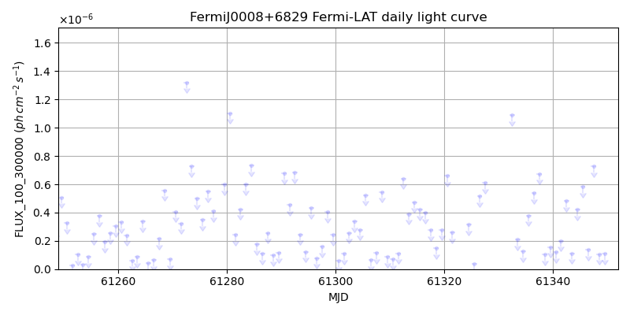
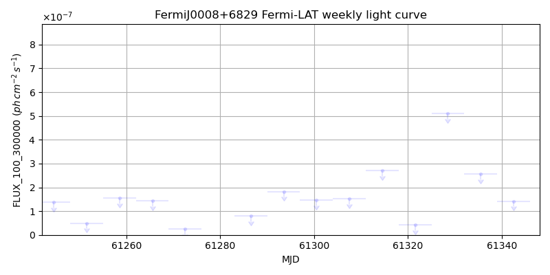
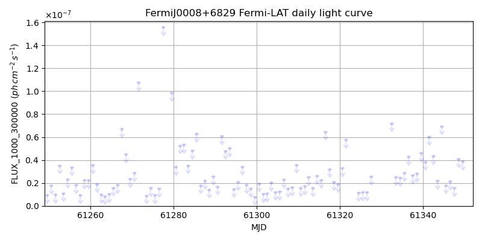
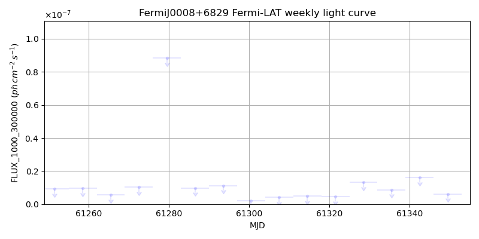

LAT Lightcurve site: https://fermi.gsfc.nasa.gov/ssc/data/access/lat/msl_lc/source/Fermi_J0008p6829
NED: Query
Time of last update of this page: UT: 2026-11-06 16:10 (MJD: 61350.674)
| Property | Value |
|---|---|
| R.A. | 0:08:20.64 |
| Dec. | 68:34:44.4 |
| z | 0.000 |
| 3FGL SpectrumType | |
| 3FGL PL Index | -1.00 |
| 3FGL Flux_100_300000 | -1.00e+00 |
| 3FGL Flux_1000_300000 | -1.00e+00 |
| 3FGL Flux >200 GeV | -1.00e+00 |
| 3FGL Extrap. Crab >200 GeV | -1.00 |
| 3FGL Flux After EBL Absorption >200GeV | -1.00e+00 |
| 3FGL EBL Crab Fraction >200GeV | -1.00 |

| MJD | dMJD | Flux | dFlux | Frac3FGL | FracCrab>200GeV | EBLFracCrab>200GeV |
|---|---|---|---|---|---|---|
| 61345.50 | 0.50 | 5.81e-07 | 0.00e+00 | 0.00 | 0.00 | -0.00 |
| 61346.50 | 0.50 | 1.36e-07 | 0.00e+00 | 0.00 | 0.00 | -0.00 |
| 61347.50 | 0.50 | 7.29e-07 | 0.00e+00 | 0.00 | 0.00 | -0.00 |
| 61348.50 | 0.50 | 1.06e-07 | 0.00e+00 | 0.00 | 0.00 | -0.00 |
| 61349.50 | 0.50 | 1.10e-07 | 0.00e+00 | 0.00 | 0.00 | -0.00 |

| MJD | dMJD | Flux | dFlux | Frac3FGL | FracCrab>200GeV | EBLFracCrab>200GeV |
|---|---|---|---|---|---|---|
| 61314.50 | 3.50 | 2.71e-07 | 0.00e+00 | 0.00 | 0.00 | -0.00 |
| 61321.50 | 3.50 | 4.21e-08 | 0.00e+00 | 0.00 | 0.00 | -0.00 |
| 61328.50 | 3.50 | 5.09e-07 | 0.00e+00 | 0.00 | 0.00 | -0.00 |
| 61335.50 | 3.50 | 2.55e-07 | 0.00e+00 | 0.00 | 0.00 | -0.00 |
| 61342.50 | 3.50 | 1.41e-07 | 0.00e+00 | 0.00 | 0.00 | -0.00 |

| MJD | dMJD | Flux | dFlux | Frac3FGL | FracCrab>200GeV | EBLFracCrab>200GeV |
|---|---|---|---|---|---|---|
| 61345.50 | 0.50 | 1.78e-08 | 0.00e+00 | 0.00 | 0.00 | -0.00 |
| 61346.50 | 0.50 | 2.14e-08 | 0.00e+00 | 0.00 | 0.00 | -0.00 |
| 61347.50 | 0.50 | 1.56e-08 | 0.00e+00 | 0.00 | 0.00 | -0.00 |
| 61348.50 | 0.50 | 4.08e-08 | 0.00e+00 | 0.00 | 0.00 | -0.00 |
| 61349.50 | 0.50 | 3.86e-08 | 0.00e+00 | 0.00 | 0.00 | -0.00 |

| MJD | dMJD | Flux | dFlux | Frac3FGL | FracCrab>200GeV | EBLFracCrab>200GeV |
|---|---|---|---|---|---|---|
| 61314.50 | 3.50 | 4.84e-09 | 0.00e+00 | 0.00 | 0.00 | -0.00 |
| 61321.50 | 3.50 | 4.56e-09 | 0.00e+00 | 0.00 | 0.00 | -0.00 |
| 61328.50 | 3.50 | 1.31e-08 | 0.00e+00 | 0.00 | 0.00 | -0.00 |
| 61335.50 | 3.50 | 8.67e-09 | 0.00e+00 | 0.00 | 0.00 | -0.00 |
| 61342.50 | 3.50 | 1.61e-08 | 0.00e+00 | 0.00 | 0.00 | -0.00 |
--------------------------------------------------------- Using user-supplied coords: 0:08:20.64 68:34:44.4 2000 --------------------------------------------------------- FLWO UT night of: 2026-11-07 Local Sid. @ Midnight: 02:42 Sunset (-15.0) (local, UT): 18:39 01:39 Sunrise (-15.0) (local, UT): 05:36 12:36 Moonrise (local, UT): 05:16 12:16 Moonset (local, UT): Moon phase: 0.04 --------------------------------------------------------- AzTime LSID UT Obj_el Obj_az Mn_el Mn_az Sep. --------------------------------------------------------- 18:39 21:20 01:39 45.9 20.5 -35.5 278.9 122.1 19:09 21:50 02:09 48.0 18.0 -41.6 283.5 122.2 19:39 22:20 02:39 49.8 14.9 -47.5 288.8 122.3 20:09 22:50 03:09 51.2 11.3 -53.3 295.3 122.3 20:39 23:20 03:39 52.3 7.3 -58.7 303.4 122.4 21:09 23:50 04:09 52.9 2.9 -63.5 313.9 122.5 21:39 00:20 04:39 52.9 358.4 -67.5 328.0 122.5 22:09 00:50 05:09 52.5 353.9 -70.0 346.2 122.6 22:39 01:20 05:39 51.6 349.7 -70.5 6.9 122.7 23:09 01:51 06:09 50.2 346.0 -68.8 26.6 122.7 23:39 02:21 06:39 48.5 342.7 -65.4 42.5 122.8 00:09 02:51 07:09 46.5 340.1 -60.9 54.4 122.9 00:39 03:21 07:39 44.2 338.0 -55.8 63.5 123.0 01:09 03:51 08:09 41.7 336.5 -50.2 70.6 123.1 01:39 04:21 08:39 39.1 335.4 -44.4 76.4 123.1 02:09 04:51 09:09 36.4 334.9 -38.4 81.4 123.2 02:39 05:21 09:39 33.7 334.8 -32.4 85.8 123.3 03:09 05:51 10:09 30.9 335.1 -26.3 89.9 123.4 03:39 06:21 10:39 28.3 335.7 -20.2 93.7 123.5 04:09 06:51 11:09 25.7 336.7 -14.2 97.5 123.6 04:39 07:21 11:39 23.2 338.0 -8.1 101.2 123.7 05:09 07:52 12:09 20.9 339.5 -1.2 105.0 123.8 05:36 08:19 12:36 18.9 341.1 3.4 108.6 123.9 --------------------------------------------------------- Source never above horizon of 55.0 deg. Dark hours >55 deg.: 0.00